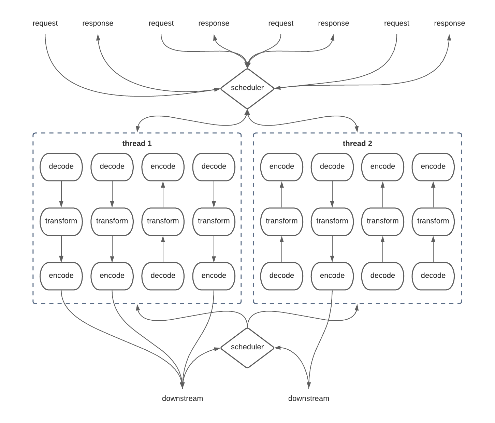
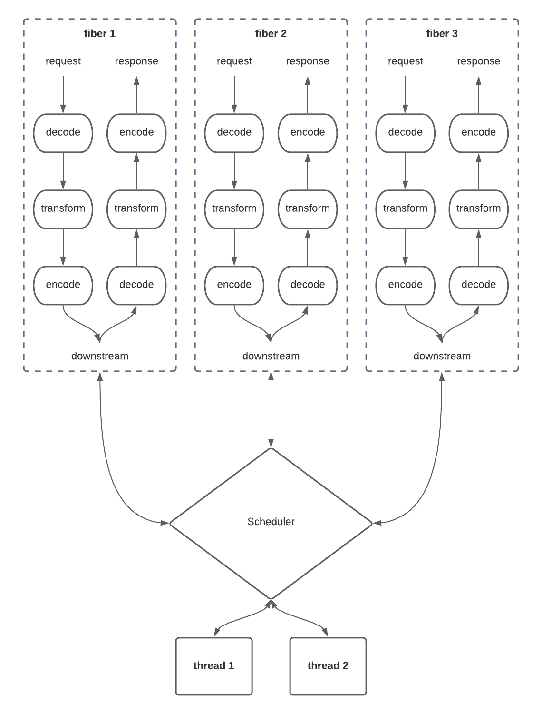

Daniel Spiewak
I write code, read papers, and think thoughts. Broadly, I'm interested in: type theory, parser theory, functional abstractions, data structures, performance.
Why Are Fibers Fast?
technicalWith Cats Effect 3.0 right around the corner, we've been publishing a lot of numbers and scenarios which demonstrate disorientingly high performance in a lot of realistic setups. At first glance, this seems to defy intuition. After all, IO is quite a heavyweight abstraction; how is it that it can be competitive with hand-written and hand-tuned code for the same use-case?
There are a lot of ways to answer this question, and they get both complex and depend heavily on exactly what use-case you're talking about, but we can get a general idea of what's going on here by zooming out a bit on the problem space.
The main thing to realize is that fibers are not fast compared to a single, hot, straight-line piece of code that runs sequentially. For example:
val data: Array[Int] = // ...
var i = 0
while (i < data.length) {
data(i) *= 2
i += 1
}Consider the above when compared to the tortured purely functional encoding of the same idea:
val data: List[Int] = // ...
data.traverse(i => IO.pure(i * 2))Okay the functional encoding is shorter, and that's even accounting for the fact that I just artificially threw IO in there for no reason. However, it is also several orders of magnitude slower than the imperative version, and more importantly, offers no advantages whatsoever. This code is not run concurrently. It is not asynchronous. It's just doing a bit of stuff with some data.
Functional programming is not compelling "in the small". It is never compelling in the small, because the small is pretty easy regardless of how you do it, and in many cases the "small" is the most performance-sensitive part of your application. Where functional programming is truly compelling is in the large, and this is what brings us to exactly why it is that Cats Effect is a shockingly fast runtime system.
Cats Effect specifically, and fibers as an idea, are meant to solve a very particular problem: how do you architect the control flow of a highly-asynchronous, highly-concurrent application without losing your mind or sacrificing performance? That's the primary thing they are designed to do. This is why their benefits in terms of code quality and maintainability are usually only felt within realistic examples, and not in scenarios which fit into slides or blog posts.
More relevantly to our original point though, this is also why the performance question is less obvious than it initially seems. In "the large" of system design, micro-optimized performance questions such as how fast you can loop over a List are just not relevant. Instead, what's really relevant is how efficiently you optimize the utilization of system resources such as CPU pipelining and page faults, what your inefficiencies are around contention and scheduling, whether or not you have pathological outcomes under pressure, and so on.
This is where Cats Effect truly shines. By providing a prescriptive (yet pleasant!) framework for defining your application's control flow, Cats Effect is able to deeply understand what it means to schedule and optimize most programs written in IO, and thus take advantage of this knowledge using algorithms and techniques which would be impossible (or at the very least, highly impractical) in a hand-written application. This is very much like how modern concurrent garbage collectors are usually much faster than hand-tuned malloc/free in practical applications, simply because the GC is able to perform some very complicated and non-local logic which would be essentially impossible if managing memory by hand.
To understand this more concretely, we need to think about what we could be doing instead of using Cats Effect. Imagine a typical HTTP service at high scale. We need to be able to accept requests as they come in, perform some basic data translation, make network calls to downstream services, and then formulate a response and serialize it to bytes. All of this must be done very very quickly and highly concurrently.
The most direct and naive way to approach this is to allocate one thread per connection. When a client connection comes in, we allocate a thread and hand off the connection for handling, and that thread will live until the response is fully generated. When we make network calls to downstream services, this thread will block on the responses, giving us a nice linear application control flow.
<!-- loads of threads diagram -->

Implementation-wise, this is very easy to reason about. Your code will all take on a highly imperative structure, with A followed by B followed by C, etc, and it will behave entirely reasonably at small scales! Unfortunately, the problem here is that threads are not particularly cheap. The reasons for this are relatively complex, but they manifest in two places: the OS kernel scheduler, and the JVM itself.
The JVM is a bit easier to understand here. Whenever you create a new thread, the garbage collector must establish an awareness of that thread and its current call stack so that it can accurately determine what parts of the shared memory space are reachable and what parts are not (literally, figuring out what memory needs to be freed). For this reason, threads are considered GC roots, which basically means that when the garbage collector scans the heap for active/inactive memory, it will do so by starting from each thread individually and will traverse its referenced object graph starting from the call stack and working upwards. Modern garbage collectors are extremely clever, but this bit of juggling between the GC and the actively-running threads is still a source of meaningful overhead, even today. The more threads you have, and the larger their respective object graphs, the more time the GC has to take to perform this scan, and the slower your whole system becomes.
In practice, on most practical hardware, you really can't have more than a few hundred threads before the JVM starts to behave poorly. Keeping things bounded to around a few dozen threads is generally considered best practice.
This is a huge problem, and we run face-first into it in architectures like the above where every request is given its own thread. How can we possibly serve tens of thousands of requests simultaneously when each request implies the allocation and maintenance of such an expensive resource? We need some way of handling multiple requests on the same thread, or at the very least bounding the number of threads we have floating around. Enter thread pools and the famous "disruptor pattern".
<!-- thread pool diagram -->

In this kind of architecture, incoming requests are handed off to a scheduler (usually a shared lock-free work queue) which then hands them off to a fixed set of worker threads for processing. This is the kind of thing you'll see in almost every JVM application written in the past decade or so.
The problem is that it still doesn't quite resolve the issue. Notice how we're still making that network call to downstream, which presumably doesn't return instantaneously. We have to block our carrier thread (the worker responsible for handling our specific request) while waiting for that downstream to respond. This creates a situation generally known as "starvation", where every thread in the pool is wasted on blocking operations, waiting for the downstream to respond, while new requests are continuing to flood in at the top waiting for worker to pick them up.
This is extremely wasteful, because we have a scarce resource (threads) which could be utilized to make some progress on our ever-filling request queue, but instead is just sitting there in BLOCKED state waiting for downstream to respond and just generally being a nuisance. The classic solution to this problem is to evolve to an asynchronous model for the network connections, allowing the downstream to take as long as it needs to get back to us, and only using the thread when we actually have real work to do.
<!-- async pool diagram --> 
This is much more efficient! It's also incredibly confusing, and it gets exponentially worse the more complexity you have in your control flow. In practice most systems like this one have multiple downstreams that they need to talk to, often in parallel, which makes this whole thing get crazy in a hurry. It also doesn't get any easier when you add in the fact that just talking to a downstream (like a database) often involves some form of resource management which has to be correctly threaded across these asynchronous boundaries and carried between threads, not to mention problems like timeouts and fallback races and such. It's a mess.
However, this is essentially what modern systems look like without Cats Effect. It's incredibly complicated to reason about it, you pretty much always get it wrong in some way, and it's actually still very wasteful and naive in terms of resource efficiency! For example, imagine if any one of these pipelines takes a particularly long time to execute. While it's executing on a thread, everything else that might be waiting for that thread has to sit there in the queue, not receiving a response. This is another form of starvation and it leads to the problem space of fairness and related questions. When this happens in your system, you could see extremely high CPU utilization (since all the worker threads are trying very hard to answer requests as quickly as possible) and very very good p50 response times, but your p99 and maybe even p90 response times climb into the stratosphere since a subset of requests under load end up sitting in the work queue for a long time, just waiting for a thread.
All in all, this is very bad, and it starts to hint at why it is that Cats Effect is able to do so much better. The above architecture is already insane and effectively impossible to get right if you're doing it by hand. Cats Effect raises your program up to a higher abstraction layer and allows you to think about things in terms of a simpler model: fibers.
<!-- fiber diagram --> 
This diagram looks a lot like the first one! In here, we're just allocating a new fiber for each request that comes in, much like how we tried to allocate a new thread per request. Each fiber is a self-contained, sequential unit which semantically runs from start to finish and we don't really need to think about what's going on under the surface. Once the response has been produced to the client, the fiber goes away and we never have to think about it again.
Of course, you can't map fibers 1-to-1 with threads, otherwise we end up recreating the first architecture but with more extra overhead in all directions. The solution here is to implement a Scheduler which understands the nature of fibers and figures out how to optimally map them onto some tightly controlled set of underlying worker threads. In Cats Effect 2, as in almost all asynchronous runtimes on the JVM, this was done using an Executor which simply maintained an internal queue of fibers. Each time a worker thread finished with a previous fiber, the queue would dictate which fiber it needs to work on next.
Critically, fibers are free to suspend at any time. In our example, fibers suspend whenever they talk to the downstream, since they're semantically waiting for a response and cannot make any forward progress within their sequential flow. Fiber suspension is safe and efficient though, because the scheduler responds to this by simply removing the fiber from the work queue until such time as the downstream responds, at which point the scheduler seamlessly re-enqueues the fiber and a new thread is able to pick it up. This ensures that the threads are always kept busy and any suspended fibers are truly free: the only resource they consume is memory.
Raising the level of abstraction here isn't just good for users who write programs (you!) in this model, it's also good for the runtime itself. The scheduler is able to solve problems such as fairness in a more general way – for example, by preventing a fiber from hogging its worker thread for too long and artificially suspending that fiber and sending it to the back of the work queue. The system is also able to contemplate other, vastly more complex problems such as resource management and interruption (for timeouts), simply because the scheduler is taking care of all of these low-level details related to keeping the workers busy.
This is already a significant improvement over what we can do by hand, not only cognitively but also in terms of runtime performance. The scheduler is able to solve a very complicated problem space in a nice, general fashion given global knowledge of the fiber space, and this results in dramatically improved efficiency in resource utilization throughout the system. We're not done though.
The above diagram is basically how Cats Effect 2, Vert.x, Project Loom, and almost every other asynchronous framework on the JVM behaves. There are some refinements that you can apply by trying to make the scheduler a bit smarter and such, but the state of the art on the JVM is basically what you see above.
That is, until Cats Effect 3.
<!-- work-stealing diagram -->

Cats Effect 3 has a much smarter and more efficient scheduler than any other asynchronous framework on the JVM. It was heavily inspired by the Tokio Rust framework, which is fairly close to Cats Effect's problem space. As you might infer from the diagram, the scheduler is no longer a central clearing house for work, and instead is dispersed among the worker threads. This immediately results in some massive efficiency wins, but the real magic is still to come.
Work-stealing schedulers are not a new idea, and in fact, they are the default when you use Monix, Scala's Future, or even the upcoming Project Loom. The whole idea behind a work-stealing scheduler is that the overhead of the scheduler itself can be dispersed and amortized across the worker pool. This has a number of nice benefits, but the most substantial is that it removes the single point of contention for all of the worker threads.
In a conventional implementation of the disruptor pattern (which is what a fixed thread pool is), all workers must poll from a single work queue each time they iterate, fetching their next task. The queue must solve the relatively complex synchronization problem of ensuring that every task is handed to exactly one worker, and as it turns out, this synchronization is extremely expensive. To make matters worse, the cost of this synchronization increases quadratically with the amount of contention! As you increase the number of working threads, the number of synchronization points between threads increases with the square of the threads. This is actually conceptually obvious, since each thread will create contention faults with every other thread, and only one thread will actually "win" and get the task. This overhead is somewhat imperceptible if you have a small number of workers, but with a larger number of workers it begins to dominate very quickly. And note, the ideal number of workers is exactly equal to the number of CPUs backing your JVM, meaning that scaling up is almost impossible with this kind of design.
Work-stealing, for contrast, allows the individual worker threads to manage their own local queue, and when that queue runs out, they simply take work from each other on a one-to-one basis. Thus, the only contention that exists is between the stealer and the "stealee", entirely avoiding the quadratic growth problem. In fact, contention becomes less frequent as the number of workers and the load on the pool increases. You can conceptualize this with the following extremely silly plot (higher numbers are bad because they represent overhead):
<!-- plot of work stealing overhead vs standard disruptor pattern -->

Work-stealing is simply very, very, very good. But we can do even better.
Most work-stealing implementations on the JVM delegate to ForkJoinThreadPool. There are a number of problems with this thread pool implementation, not the least of which is that it tries to be a little too clever around thread blocking. In essence, the work-stealing implementation in the JDK has to render itself through a highly generic interface – literally just execute(Runnable): Unit! – and cannot take advantage of the deep system knowledge that we have within the Cats Effect framework. Specifically, we know some very important things:
blocking and other tools to avoid hard-blocking the main compute pool, meaning that we can optimize assuming that this case is exceptionally rare and we don't need to try to detect blocked threads and speculatively grow the pool. This keeps our worker thread count exactly where it should be: pinned to the number of physical CPUs.The way in which we optimize for fibers specifically is by ensuring that fiber suspension and wake-up is kept pinned to a single worker thread per fiber as much as possible. Obviously, if one thread is completely overloaded by work and the other threads are idle, then the fiber is going to move over to those other threads and the result is going to be a page fault, but in the common case this simply doesn't happen. Each thread is responsible for some number of fibers, and those fibers remain on that thread as long as possible. This allows the operating system thread scheduler in turn to live within its happy-path assumptions about memory utilization, keeping fiber memory state resident within the L3 and L2 caches for longer, even across asynchronous boundaries! This has a massive impact on application performance, because it means that fibers are able to avoid round-trips to system main memory in the common case.
This is in contrast to the single shared queue implementation that is all-too common in this space. With a single shared work queue, once a fiber suspends, there is no guarantee that it will be reallocated back to the thread it was on prior to suspension. In fact, the odds of this drop to almost nothing as you increase the number of workers, and so again the general pattern gets much worse as you scale up the number of CPUs. Remember that any time semantically-sequential work is moved from one thread to another, that work is usually also going to be moving from one CPU to another, meaning that all of the nice caching benefits that we normally get from the memory cache hierarchy are blown away as we have to laboriously re-build our working set from main memory (a page fault). A fiber-aware work-stealing scheduler avoids this problem almost all of the time.
This also means that the fairness problem can be solved effectively for free, since a fiber is able to yield control back to its worker thread without incurring the penalty of a page fault or even a memory barrier! In the event that the worker thread has other fibers waiting for time, those fibers will take over at the yield and the starvation is averted (keeping your p99s low!). If the worker thread does not have other fibers waiting for time, then the yielding fiber picks up right where it left off with almost exactly zero cost, meaning that we're able to solve fairness with no cost to throughput.
There's a lot more going on in this layer than just what I've described, but hopefully this gives a rough intuition as to why Cats Effect 3's scheduler is able to achieve the crazy performance numbers we see in practice, and also why it is that fibers are not only an easier model for writing highly scalable modern applications, they are also a faster and more efficient model for running those applications at scale.
Daniel Spiewak
I write code, read papers, and think thoughts. Broadly, I'm interested in: type theory, parser theory, functional abstractions, data structures, performance.